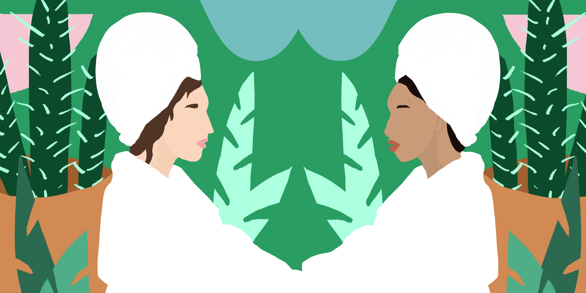

<!DOCTYPE html>
<html lang="en">
<head>
	<!-- Global site tag (gtag.js) - Google Analytics -->
	<script async src="https://www.googletagmanager.com/gtag/js?id=UA-96656348-1"></script>
	<script>
	window.dataLayer = window.dataLayer || [];
	function gtag(){dataLayer.push(arguments);}
	gtag('js', new Date());

	gtag('config', 'UA-96656348-1');
	</script>

	<!-- Metas -->
	<meta charset="UTF-8">
	<meta name="viewport" content="width=device-width, initial-scale=1.0, maximum-scale=1.0, user-scalable=0">
	<title>Toni Cater - Designs</title>
	<meta name="description" content="Toni Cater - Designs">

	<!-- External CSS -->
	<link rel="stylesheet" href="assets/css/fontawesome-all.min.css">
	<link rel="stylesheet" href="assets/css/themify-icons.css">
	<link rel="stylesheet" href="assets/css/linea_arrows.css">

	<!-- Custom CSS -->
	<link rel="stylesheet" href="assets/css/main.css">
	<link rel="stylesheet" href="assets/css/colors.css">
	<link rel="stylesheet" href="assets/css/responsive.css">

	<!-- Google Fonts -->
	<link href="https://fonts.googleapis.com/css?family=Lato:300,400,700,900" rel="stylesheet">

	<!-- Favicon -->
	<link rel="apple-touch-icon" sizes="180x180" href="assets/favicon/apple-touch-icon.png">
	<link rel="icon" type="image/png" sizes="32x32" href="assets/favicon/favicon-32x32.png">
	<link rel="icon" type="image/png" sizes="16x16" href="assets/favicon/favicon-16x16.png">
	<link rel="manifest" href="assets/favicon/site.webmanifest">
	<link rel="mask-icon" href="assets/favicon/safari-pinned-tab.svg" color="#5bbad5">
	<meta name="msapplication-TileColor" content="#2b5797">
	<meta name="theme-color" content="#ffffff">
</head>

<body>

	<div class="container">

		<!-- Header -->

		<header class="main-header">

			<!-- <a href="/" class="logo">
				
			</a> -->

			<nav>

				<a href="#" class="open-nav"><i></i></a>
				<ul class="navigation" style="color: #000">
					<li><a href="/" style="color: #000">home</a></li>
					<li><a href="single-project_05 copy.html" style="color: #000">portfolio</a>
						<ul class="sub-nav">
							<li><a href="single-project_05 copy.html">Ameline Ava</a></li>
              				<li><a href="single-project_05.html">Chefdrop</a></li>
							<li><a href="single-project_06.html">Ganjika House</a></li>
							<li><a href="single-project_07.html">If You Met a Yeti...</a></li>
							<li><a href="single-project_01.html">BITS Annual Report</a></li>
							<li><a href="single-project_02.html">UforChange Annual Report</a></li>
							<li><a href="single-project_03.html">Black Futures</a></li>
							<li><a href="single-project_04.html">Textiles</a></li>
							<li><a href="single-project_08.html">Women In View</a></li>
						</ul>
					</li>
					<li><a href="about.html" style="color: #000">about</a></li>
				</ul> <!-- /.navigation -->

			</nav> <!-- /nav -->

		</header> <!-- /header -->

		<div class="clearfix"></div>

	</div> <!-- /.container -->

	<!-- Main -->

	<main class="single-project project_05">

		<section class="overview">

			<div class="container">

				<header>
					<span class="project-services">Brand Identity and Design System </span>
					<h1 class="project-title">Ameline Ava Brand Development</h1>
				</header>

				<p>Ameline Ava is a luxury online store that provides fine quality products that nurture self-care and wellness.</p>
				<a href="https://amelineava.com/" target="_blank" class="read-more-link">visit website<i class="ti-arrow-right"></i></a>

			</div> <!-- /.container -->

		</section> <!-- /.overview -->

		

		<div class="container">

			<p class="intro">
				The owner of Ameline Ava reached out to me to design an online clothing line that provides luxury loungewear that caters to self-care and wellness. I started by conducting several workshops that helped narrow down their message, intentions and also the approach to their branding. 			</p> <!-- /.intro -->

			

			<section class="project-details">

				<div class="content">
					<h2>research & planning</h2>
					<p>When conducting my research, I discovered that there was a peak interest in the market for wellness brands, being one of the fastest-growing industries on the market. My job was to help my client stand out in this market, focusing on a more conscious effect their clothing will have on their customers.  
					In my research, I looked at wellness brands like Saje and Vitruvi. I noticed that language was focusing on the user and the luxury of their experience. My client also wanted her clients to feel that this was a luxurious brand when they first enter the site, but unlike most luxury  brands, still be relatable.
					It was important to the client to keep the merchandise photography minimalistic, focusing on the brand colours in contrast with the all white products. The reason for this was because for the first launch, the products will only have one colour to choose from. 
				</p>
					&nbsp;
					
				</div>

			</section> <!-- /.project-details -->

				</div>

			</section> <!-- /.project-details -->

		</div> <!-- /.container -->

		<div class="color-block">

			<div class="container">
				<p> I was hired to consult and design a whole product from it’s inception to launch. I had a lot of creative freedom and a say in how this client should execute their e-commerce business. To see the full process, please read the casestudy. </p>
			</div>

		</div> <!-- /.color-block -->

		<div class="container">

			<section class="project-details">

<div class="content">
    <a href="assets/files/Ameline Ava Case Study and Design System copy.pdf" target="_blank" class="read-more-link">view casestudy<i class="ti-arrow-right"></i></a>
</div>


		</div> <!-- /.container -->


		<div class="container">

			<div class="projects-nav">

				<div class="next-project">
					<span>next</span>
					<h2><a href="single-project_05.html">Chefdrop</a></h2>
				</div>

				<div class="clearfix"></div>

			</div> <!-- /.projects-nav -->

		</div> <!-- /.container -->

	</main> <!-- /main -->

	<!-- Footer -->
	<footer class="main-footer">

		<div class="content">

			<div class="social-icons">
				<ul>
					<li><a target="_blank" href="https://www.instagram.com/tonicaterdesigns/"><i class="fab fa-instagram"></i></a></li>
          			<li><a target="_blank" href="https://www.behance.net/tonicdesigns"><i class="fab fa-behance"></i></a></li>
					<li><a target="_blank" href="https://www.linkedin.com/in/toni-cater-50817a78/"><i class="fab fa-linkedin-in"></i></a></li>
				</ul>
			</div>

			<div class="copyright-info">
				<p>Copyright &#169; Toni Cater Designs. All rights reserved.</p>
			</div>

		</div>

	</footer>

	<div class="aside-nav-container">

		<a href="#" class="close-nav"><i class="ti-close"></i></a>

		<nav>

			<ul class="aside-nav">
				<li><a href="/">home</a></li>
				<li><a href="single-project_01.html">portfolio</a></li>
				<li><a href="about.html">about</a></li>
				<li><a href="contact.html">contact</a></li>
			</ul> <!-- /.aside-nav -->

		</nav>

	</div> <!-- /.aside-nav-container -->

	<div class="body-overlay"></div>

	<!-- Script -->
	<script src="assets/js/main.js"></script>

</body>
</html>
